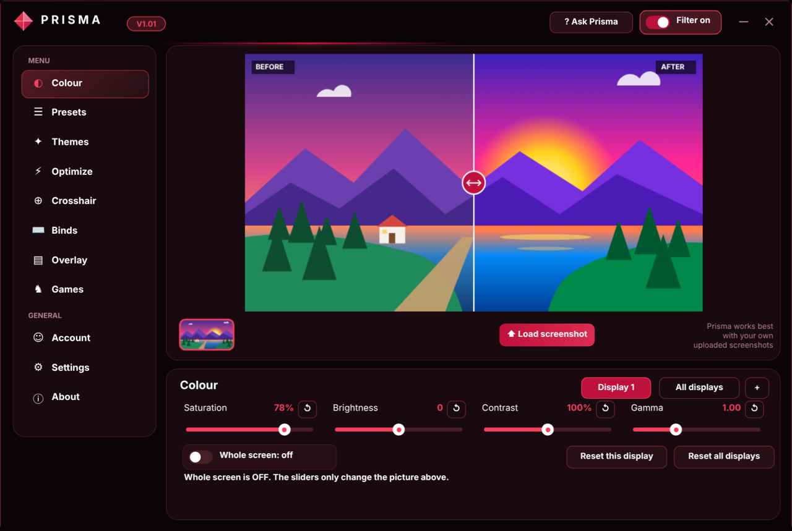
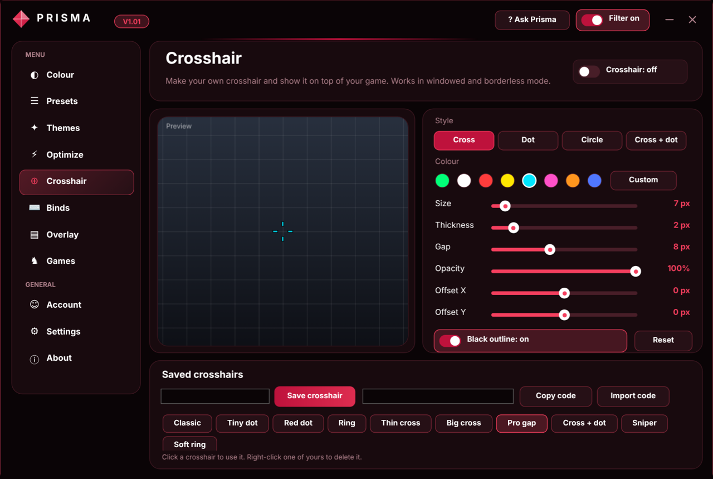
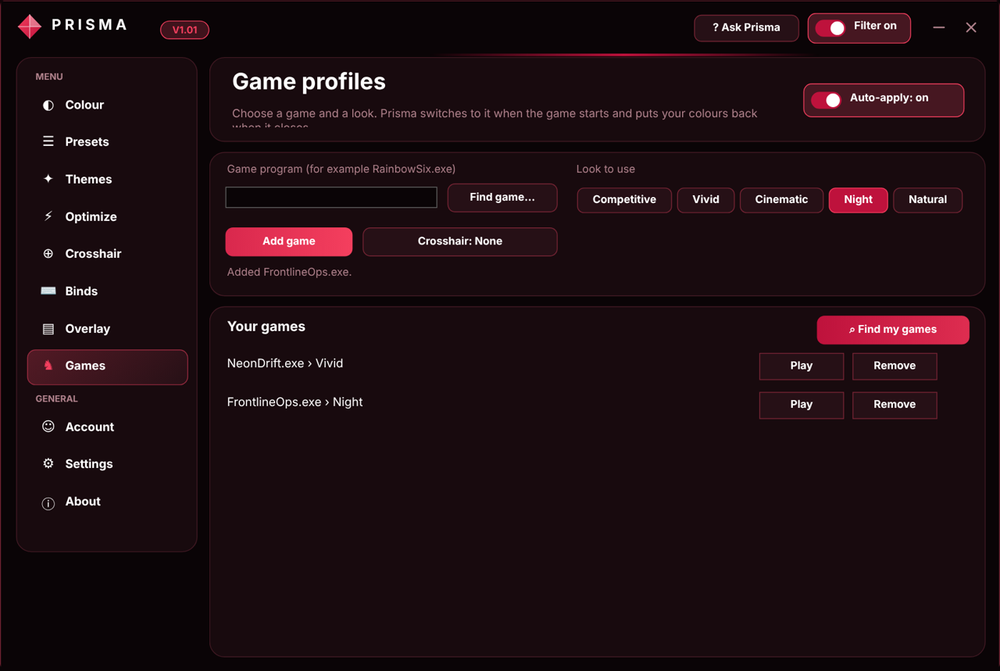

Prisma
Make every game look exactly how you want. Colour and vibrance control, a crosshair and performance overlay, and per-game profiles in one toolkit for NVIDIA GPUs on Windows.
Everything in one place
Prisma brings the tweaks you'd normally hunt for in five different apps into one fast, good-looking app. See every feature →
Colour & vibrance
Dial in digital vibrance, brightness, contrast and gamma so games pop without touching the NVIDIA Control Panel.
Presets
Save your favourite looks and switch between them in one click, or start from built-in presets.
Per-game profiles
Prisma notices which game is running and applies its profile automatically, then restores your desktop.
Crosshair overlay
A clean, customisable crosshair drawn on top of any game: shape, size, colour and gap.
CPU / GPU overlay
Live temps, load, clocks and FPS-friendly stats in a small corner overlay you can place anywhere.
Windows optimizer
One-click tweaks that trim background clutter and set Windows up for smoother, lower-latency gaming.
Hotkeys
Toggle presets, overlays and the crosshair mid-match without alt-tabbing.
Themes
Black and crimson by default, with themes to make the app look the way you like.
Account sync
Sign in to back up your presets and profiles and bring them to a new PC.
See it in action
A clean, dark interface that stays out of your way.



Ready to see your games differently?
One small installer. No bloat. Free account for syncing your presets.